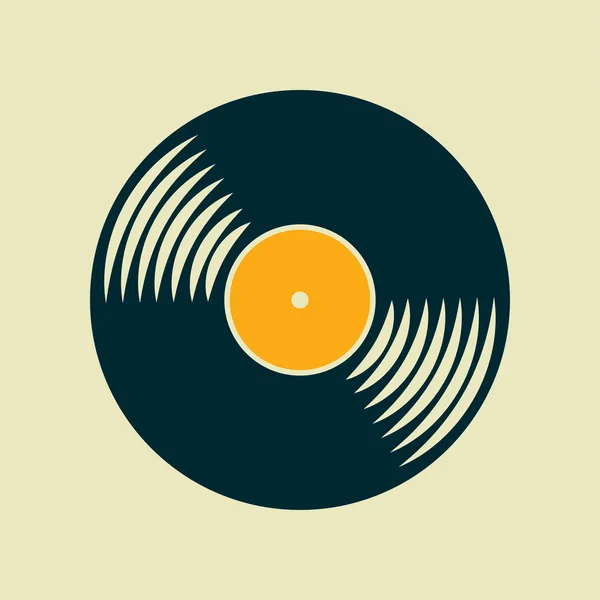
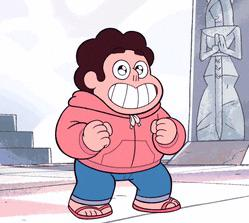

StarUniverse
Home
História
Música
Enquetes
|
Logout

Selecione uma faixa
Drift Away
Independent Together
Love Like You
True Kinda Love
Original - English
Letra em Inglês
Tradução - Português
Letra em Português brasileiro

Essa música
é curtida por
pessoas